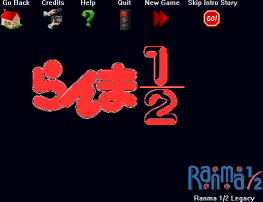
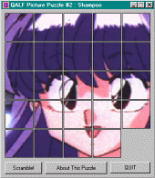
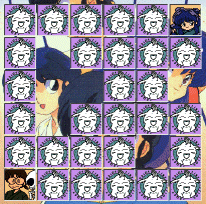

Ranma 1/2 - PC Games

Ranma 1/2: Legacy is a freeware game in the early
stages of development.

Ranma 1/2 tile game lets you try
to rearrange the tiles to form an image of Shampoo.

Standard concentration game
where you flip over cards to try to match characters. Two wild cards are available.
Anime Video Game Resource Center © 1998 by Luis A. Cruz